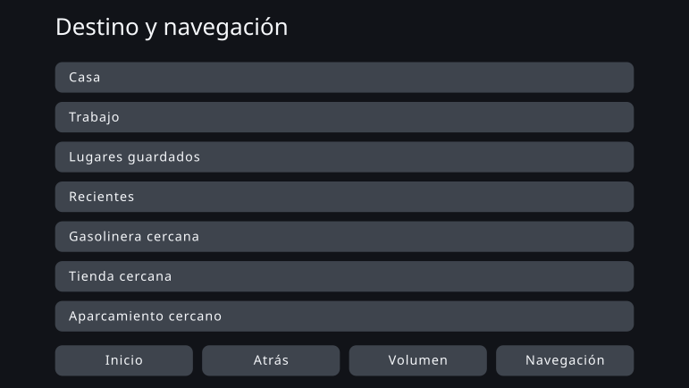
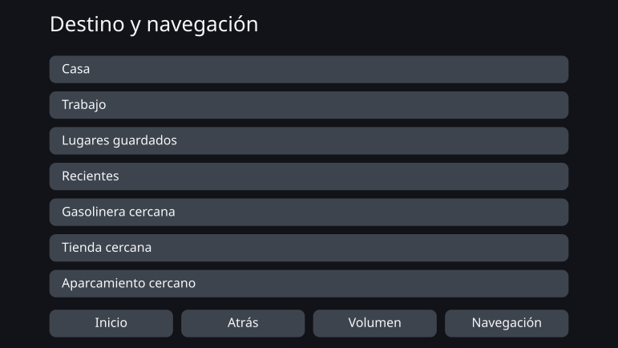

Personal Fit UI - Optimización individual de la interfaz mediante diseño por restricciones
agosto de 2026
Resumen general
Todo el mundo usa la misma interfaz de la misma manera. Este trabajo deja atrás esa premisa de la producción en masa y pregunta si es posible generar, en su lugar, una interfaz ajustada a las características cognitivas, sensoriales y físicas de cada persona.
No se buscaba una interfaz cuya pantalla cambie continuamente según la situación mientras se usa. Se trata de un mecanismo que capta las características de la persona en el momento en que empieza a usar el producto y genera de antemano una interfaz que le convenga, respetando las restricciones de seguridad y accesibilidad.
En este trabajo puse en práctica una idea que llamo diseño por restricciones. A partir de la literatura y de las normas, la persona diseña las direcciones que hay que seguir y los límites que no deben cruzarse. Dentro de ese marco, la IA decide los valores y las formulaciones concretas, y lo generado se verifica para comprobar que no vulnera el marco.
La prueba de concepto tomó como tema un sistema de navegación para automóvil y generó una interfaz para trece personas ficticias con características distintas. Casi nada cambió a la vista. El rendimiento apareció en otro lugar: al escribir las restricciones en una forma verificable se vio dónde queda margen para la individualización y dónde lo consumen las restricciones.
Lo que significa entregar a todos una misma interfaz
Hoy la mayoría de los productos se diseñan sobre el supuesto de la producción en masa: una sola interfaz que cubra a cuanta más gente mejor. Incluso cuando se puede cambiar el tamaño del texto o el número de elementos en pantalla, es el propio usuario quien debe encontrar el estado que le conviene y configurarlo.
Este método funciona para mucha gente. Pero ajustarse a muchos y ajustarse a todos no son lo mismo. Un producto puede cumplir todos los estándares de diseño compartidos y aun así dejar fuera a personas para quienes esa interfaz resulta difícil de usar.
La misma estructura aparece en la evaluación de las interfaces de a bordo. El procedimiento de aceptación de la NHTSA estadounidense sobre las miradas apartadas de la vía durante la conducción no exige que todos los participantes cumplan el criterio. Una tarea se da por aprobada cuando lo cumplen 21 de 24 participantes: que una parte no lo cumpla está previsto de antemano dentro del propio sistema. Un documento que los fabricantes presentaron al regulador va más lejos y comunica que alrededor de una de cada seis personas aparta la mirada durante más tiempo de forma constante a lo largo de varias tareas. Ese documento procede de los fabricantes sujetos a la norma y pedía relajar el criterio. Lo que aquí se propone no es relajar el criterio, sino aumentar mediante la individualización el número de personas capaces de cumplirlo.
El sentido de una interfaz individualizada no es hacer que la pantalla de todos resulte novedosa. Es incorporar a quienes la interfaz uniforme dejaba fuera al terreno donde pueden usarla y manejarla con seguridad.
Hasta ahora, el coste de diseñar una interfaz para una sola persona no era realista. Desde que la IA puede tratarse como parte del proceso de diseño, esa premisa ha empezado a cambiar.
La navegación del automóvil como tema
El tema de este trabajo no es la navegación del automóvil, sino la interfaz individualizada. La navegación se eligió como un caso con el que examinar sus posibilidades y sus límites.
Una interfaz de a bordo tiene restricciones severas: una pantalla limitada, un tiempo de mirada muy breve y la seguridad de cada maniobra. Antes de salir al mercado se valida como una interfaz uniforme que la mayoría pueda usar, y esa misma interfaz llega después a las personas a las que ese diseño no les conviene.
Si la individualización se sostiene en un ámbito tan restringido, la idea del diseño por restricciones puede examinarse en concreto. A la inversa, cabe la posibilidad de que las restricciones apenas dejen libertad a la IA. Era un tema que permitía observar ambas cosas.
En Japón, en 2026, conviven modelos compatibles con las actualizaciones por aire y los sistemas de navegación convencionales montados de fábrica que no admiten actualización. Y aunque los datos del mapa puedan actualizarse, la estructura básica de la interfaz no se rediseña necesariamente una y otra vez después de la compra. Esta prueba de concepto supone un sistema cuya interfaz no se actualiza con frecuencia una vez comenzado el uso.
Convertir la individualización en algo que un mecanismo pueda generar
El diseño por restricciones consiste en fijar el marco con claridad y dejar que dentro de él la IA se mueva con flexibilidad y con sensibilidad para los matices. A diferencia de un mecanismo paramétrico que extrae valores de una tabla establecida, aquí se diseña el propio rango de soluciones que la IA puede explorar.
El conocimiento científico no siempre llega hasta la cifra concreta. A veces solo señala una dirección: agrandar, mostrar menos. Donde el valor queda determinado, se calcula como regla; donde solo se conoce la dirección, la IA concreta dentro de lo que las restricciones permiten. No dejar que esa distinción se difumine forma parte del mecanismo.
Fijar las dimensiones cognitivas
Definir los ejes como características relacionadas con la facilidad de uso, no como diagnósticos: memoria de trabajo, tolerancia a los estímulos que distraen, características visuales y auditivas, destreza manual.
Tabla de correspondencias
Vincula las características del usuario con los parámetros de la interfaz que deben moverse: qué característica mueve qué, en qué sentido y con qué fundamento.
Evidencia y normas
Reunir criterios de seguridad, normas de accesibilidad, hallazgos de las ciencias cognitivas y principios generales de diseño de interfaces.
Conjunto de restricciones
Las condiciones que todo resultado generado debe respetar. No se quedan en principios: se escriben de modo que pueda verificarse si se cumplen o se vulneran.
Espacio de diseño
Todo lo que la interfaz puede variar: tamaño del texto, objetivos táctiles, número de elementos visibles, jerarquía de la información, avisos, vocabulario, orden y agrupación. La tabla de correspondencias da la dirección del ajuste; el conjunto de restricciones retira las soluciones que no se permiten.
La IA concreta dentro del marco
Con la libertad que queda, decide valores, vocabulario, orden y agrupación. Una comprobación aparte confirma el ajuste al marco, y solo se emite la interfaz individualizada que satisface todas las condiciones.
Prueba de concepto: una interfaz para trece personas ficticias
La prueba de concepto preparó trece personas ficticias con distintas combinaciones de características. No reproducen ninguna distribución real de usuarios: son puntos de una retícula de verificación, con las características colocadas a propósito para comprobar cuáles de ellas hacen cambiar la interfaz.
Para cada una se comparó la interfaz uniforme común, el before, con la interfaz generada a partir de sus características, el after.
Un caso que apenas cambió
PS-01 — referencia (edad madura, perfil típico)
Esta persona ficticia se sitúa en el rango típico en todas sus características cognitivas, sensoriales y físicas. Tras la individualización el texto es algo mayor, pero el número de elementos mostrados, la disposición y el tamaño de las zonas táctiles quedan casi igual.
Interfaz uniforme (before)

Interfaz individualizada (after)

Un caso en el que el cambio se ve
PS-12 — edad madura, poca destreza manual (perfil sensorial y cognitivo típico)
Esta persona ficticia coincide con PS-01 en edad y en características sensoriales y cognitivas; solo la destreza manual es baja. En el after los objetivos táctiles se agrandan y los elementos visibles en una pantalla bajan de siete a cuatro. El resto pasa a la pantalla siguiente, que es justo lo que permite asegurar el tamaño de cada objetivo.
Interfaz uniforme (before)

Interfaz individualizada (after)
La literatura indica el límite inferior que debe cumplir un objetivo táctil y la dirección en que conviene agrandarlo cuando la precisión del gesto es baja. Lo que no fija de manera unívoca es cuánto añadir para esta persona en concreto. Esa parte indeterminada es la que concretó la IA, dentro del rango de las restricciones.
Lo que dio la prueba de concepto
Un cambio claramente visible solo se comprobó en PS-12, una de las trece. En la mayoría de las personas ficticias, la interfaz uniforme del before ya funcionaba lo bastante bien; el beneficio de la individualización apenas se manifestó, al menos de una forma reconocible en la pantalla.
En PS-12 sí pudo mostrarse la individualización a la vista, pero un cambio de esa magnitud está al alcance de los ajustes de pantalla y de accesibilidad de los productos actuales. Ofrecer desde el principio un estado que encaje, sin que el usuario tenga que configurarlo, tiene su valor. Aun así, no puede decirse que se haya creado una interfaz nueva que solo una IA pudiera proponer.
No concluí de este resultado que la individualización mediante IA hubiera tenido éxito.
Por qué no apareció la diferencia
La causa está en que el espacio de diseño que satisface las restricciones era estrecho.
Una interfaz de a bordo tiene numerosos mínimos y máximos de seguridad. El texto y los objetivos táctiles necesitan un tamaño mínimo, y hay un tope para la cantidad de información que cabe en una pantalla. Al aplicarlos uno tras otro, a la IA le quedaban muy pocas soluciones que elegir.
Buena parte de lo que la IA concretó estaba también, a esta escala, dentro de lo que una persona puede decidir una vez y fijar en una pequeña tabla de correspondencias. Esto no significa que la IA sobrara: cubrió valores concretos que la literatura no indica. Pero le quedaban demasiado pocas opciones para explorar.
En cambio, en la reformulación del vocabulario quedaba mucha libertad. Sin embargo, esas diferencias se perciben mal como cambios en la composición de la pantalla: el terreno donde la persona podía reconocer el valor y el terreno que las reglas no alcanzan a escribir no se solapaban.
El resultado apareció en el marco, no en la interfaz
El mayor resultado de esta prueba de concepto no se produjo en la fase de generar interfaces, sino antes, en la de diseñar las restricciones. Al ir escribiendo normas y literatura como condiciones que una máquina pueda verificar, aparecieron varias incoherencias en el propio marco.
- Distintas normas fijaban límites inferiores diferentes para un mismo elemento de la interfaz.
- La condición «se aplica solo en marcha» no tenía dónde escribirse dentro de la especificación.
- Dos ejes de diseño que en realidad son independientes se habían fundido en uno, de modo que las restricciones eliminaban casi todas las opciones.
- No se le había transmitido a la IA con suficiente claridad qué restricción gobierna qué salida, y condiciones ajenas entraban en sus decisiones.
- Decisiones que debían quedar en manos de la IA estaban fijadas en la implementación, lo que acercaba el diseño por restricciones a un simple motor de reglas.
En cada uno de estos casos la IA detectó la incoherencia y señaló el punto afectado, una persona decidió y la restricción se corrigió.
Es decir, el logro de este trabajo está menos en que una IA haya creado una interfaz nueva que en que el ir y venir con la IA sometió a prueba y actualizó el propio marco del que nacen las interfaces. El papel de la IA en el diseño por restricciones no consiste solo en generar el producto terminado. Consiste también en encontrar, antes de generar nada, dónde chocan unas reglas con otras y qué posibilidades de diseño se han borrado sin que nadie lo pretendiera.
Trabajo futuro: un marco claro y ancho por dentro
Lo que el diseño por restricciones espera de la IA no es que saque de una tabla valores ya decididos. Es que, tras excluir mediante las restricciones lo manifiestamente inadecuado, presente entre las muchas posibilidades restantes la solución con mayor probabilidad de ser adecuada, o muestre un patrón que la persona no habría pensado de antemano.
Esta vez ese efecto no llegó a manifestarse lo suficiente. No porque no hubiera choques, sino porque el espacio de diseño que satisface las restricciones era estrecho y apenas quedaba sentido en elegir una solución mejor o una solución nueva.
Lo siguiente que hay que preguntar no es si la IA resulta eficaz. Es: ¿a partir de qué amplitud de espacio de diseño surge el efecto propio de la IA?
En la próxima práctica elegiré un tema donde se mantenga la seguridad, sobrevivan varias soluciones válidas y las diferencias que las reglas no alcanzan a escribir sean reconocibles como valor también para las personas. El marco se define con claridad; dentro de él se deja anchura suficiente para que la IA explore. Sostener ambas cosas es lo que convierte el diseño por restricciones en un método de diseño para la era de la IA y no en mera automatización.